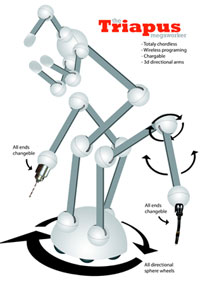
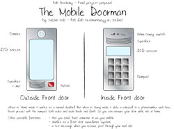

assignment : 1. a self-reproducing machine
2. a potential semester project


| Assignment 1- Our first assignment was no small matter to design and document a self-reproducing machine. This is what I came up with: The Triapus megaworker A three armed robot on six spherewheels that works on top of the material within a predefined area. Each arm has three joints and on the end a changeable tool. The top part of each joint can rotate 360° and the each rod can flex 180°. One arm is the grip arm the "hand" and can cutout, weld and put together the piece your buildin. 100% self-reproducing machine The robot is controlled via a computer with a wireless connection and works on a battery. Assignment 2 - Come up with a potenial semester project. This is where my first thougts went: The Mobile Doorman Stage 1: Mobile doorbell with just audio back and forth. Stage 2: Videocall doorbell with audio and video back and forth. Stage 3: Videocall doorbell plus front door surveillance system. Other thougts: - You could "buzz" someone in via your mobile. - A text message on your mobile when you get mail throug the mail slot |
||